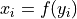
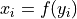

Utility functions¶
Various utilities and helper functions.
- permute.utils.binom_conf_interval(n, x, cl=0.975, alternative='two-sided', p=None, **kwargs)[source]¶
Compute a confidence interval for a binomial p, the probability of success in each trial.
- Parameters
- nint
The number of Bernoulli trials.
- xint
The number of successes.
- clfloat in (0, 1)
The desired confidence level.
- alternative{“two-sided”, “lower”, “upper”}
Indicates the alternative hypothesis.
- pfloat in (0, 1)
Starting point in search for confidence bounds for probability of success in each trial.
- kwargsdict
Key word arguments
- Returns
- tuple
lower and upper confidence level with coverage (approximately) 1-alpha.
Notes
- xtolfloat
Tolerance
- rtolfloat
Tolerance
- maxiterint
Maximum number of iterations.
- permute.utils.binomial_p(x, n, p, alternative='greater')[source]¶
- Parameters
- xarray-like
list of elements consisting of x in {0, 1} where 0 represents a failure and 1 represents a seccuess
- pint
hypothesized number of successes in n trials
- nint
number of trials
- alternative{‘greater’, ‘less’, ‘two-sided’}
alternative hypothesis to test (default: ‘greater’)
- Returns
- ——-
- float
estimated p-value
- permute.utils.get_prng(seed=None)[source]¶
Turn seed into a cryptorandom instance
- Parameters
- seed{None, int, str, RandomState}
If seed is None, return generate a pseudo-random 63-bit seed using np.random and return a new SHA256 instance seeded with it. If seed is a number or str, return a new cryptorandom instance seeded with seed. If seed is already a numpy.random RandomState or SHA256 instance, return it. Otherwise raise ValueError.
- Returns
- RandomState
- permute.utils.hypergeom_conf_interval(n, x, N, cl=0.975, alternative='two-sided', G=None, **kwargs)[source]¶
Confidence interval for a hypergeometric distribution parameter G, the number of good objects in a population in size N, based on the number x of good objects in a simple random sample of size n.
- Parameters
- nint
The number of draws without replacement.
- xint
The number of “good” objects in the sample.
- Nint
The number of objects in the population.
- clfloat in (0, 1)
The desired confidence level.
- alternative{“two-sided”, “lower”, “upper”}
Indicates the alternative hypothesis.
- Gint in [0, N]
Starting point in search for confidence bounds for the hypergeometric parameter G.
- kwargsdict
Key word arguments
- Returns
- tuple
lower and upper confidence level with coverage (at least) 1-alpha.
Notes
- xtolfloat
Tolerance
- rtolfloat
Tolerance
- maxiterint
Maximum number of iterations.
- permute.utils.hypergeometric(x, N, n, G, alternative='greater')[source]¶
- Parameters
- xint
number of good elements observed in the sample
- Nint
population size
- nint
sample size
- Gint
hypothesized number of good elements in population
- alternative{‘greater’, ‘less’, ‘two-sided’}
alternative hypothesis to test (default: ‘greater’)
- Returns
- ——-
- float
estimated p-value
- permute.utils.permute(x, seed=None)[source]¶
Permute an array in-place
- Parameters
- xarray-like
A 1-d array
- seedRandomState instance or {None, int, RandomState instance}
If None, the pseudorandom number generator is the RandomState instance used by np.random; If int, seed is the seed used by the random number generator; If RandomState instance, seed is the pseudorandom number generator
- Returns
- None
Original array is permuted in-place, nothing is returned.
- permute.utils.permute_incidence_fixed_sums(incidence, k=1, seed=None)[source]¶
Permute elements of a (binary) incidence matrix, keeping the row and column sums in-tact.
- Parameters
- incidence2D ndarray
Incidence matrix to permute.
- kint
The number of successful pairwise swaps to perform.
- seedRandomState instance or {None, int, RandomState instance}
If None, the pseudorandom number generator is the RandomState instance used by np.random; If int, seed is the seed used by the random number generator; If RandomState instance, seed is the pseudorandom number generator
- Returns
- permuted2D ndarray
The permuted incidence matrix.
Notes
The row and column sums are kept fixed by always swapping elements two pairs at a time.
- permute.utils.permute_rows(m, seed=None)[source]¶
Permute the rows of a matrix in-place
- Parameters
- marray-like
A 2-d array
- seedRandomState instance or {None, int, RandomState instance}
If None, the pseudorandom number generator is the RandomState instance used by np.random; If int, seed is the seed used by the random number generator; If RandomState instance, seed is the pseudorandom number generator
- Returns
- None
Original matrix is permuted in-place, nothing is returned.
- permute.utils.permute_within_groups(x, group, seed=None)[source]¶
Permutation of condition within each group.
- Parameters
- xarray-like
A 1-d array indicating treatment.
- grouparray-like
A 1-d array indicating group membership
- seedRandomState instance or {None, int, RandomState instance}
If None, the pseudorandom number generator is the RandomState instance used by np.random; If int, seed is the seed used by the random number generator; If RandomState instance, seed is the pseudorandom number generator
- Returns
- permutedarray-like
The within group permutation of x.
- permute.utils.potential_outcomes(x, y, f, finverse)[source]¶
Given observations
 under treatment and
under treatment and  under control conditions,
returns the potential outcomes for units under their unobserved condition
under the hypothesis that  for all units.
under control conditions,
returns the potential outcomes for units under their unobserved condition
under the hypothesis that  for all units.- Parameters
- xarray-like
Outcomes under treatment
- yarray-like
Outcomes under control
- ffunction
An invertible function
- finversefunction
The inverse function to f.
- Returns
- potential_outcomes2D array
The first column contains all potential outcomes under the treatment, the second column contains all potential outcomes under the control.